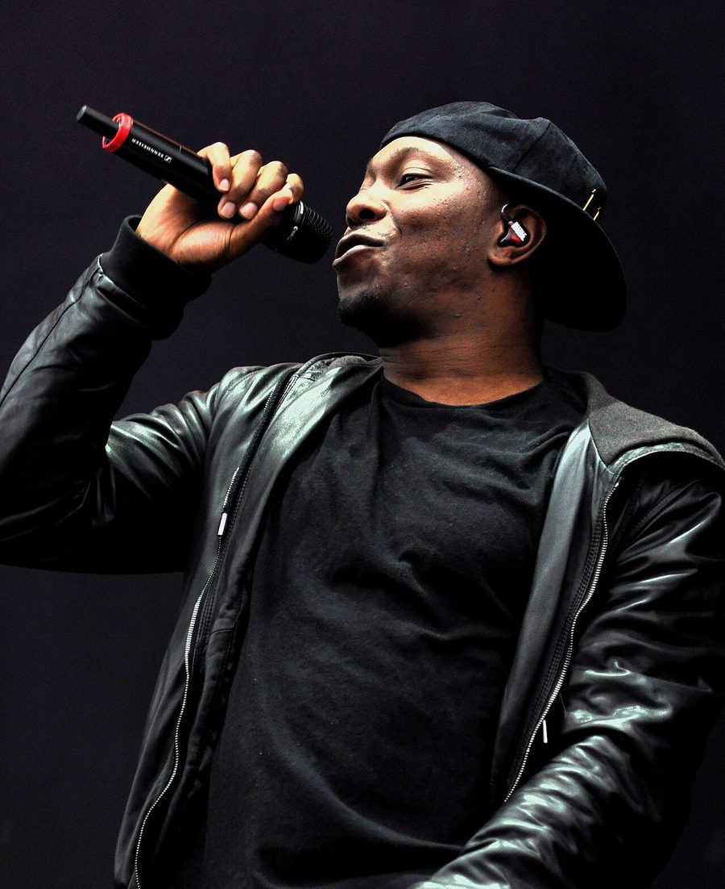

Dizzee Rascal gets mighty pissed with news.com.au journo


.jpg){kind=link}
Can you blame him? We reckon we’d get a tad irritated if we were getting grilled over something inane while preparing to hit the stage for the Big Day Out, but apparently UK rap star Dizzee Rascal got really damn pissed during an interview with a news.com.au journo last week – in the process incurring the wrath of Rupert Murdoch’s mighty media empire. Watch yourself there, Dizzee!
The way that news.com.au tells it, Dizzee got a little worked up when reporter Alison Stephenson started asking him whether he’d ever fallen over on stage. “Yeah, yeah I have stacked it on stage,” he replied. When Stephenson pushed for more details, Dizzee replied, “Well I stacked it, innit.” Oakie dokies.
Allegedly, things turned a ‘lil nasty when the reporter later tried to turn the conversation back to the ‘falling over’ incident. “So, you didn’t eat the floor or anything like that?” Dizzee had finally had enough. “What the f**k do you want from me man, I’ve already said I done it. Yeah I stacked it, bitch. F**k.” Ouch!
Escapades ensued, with Dizzee allegedly refusing to continue with his afternoon schedule of interviews until the footage was destroyed, with Stephanson claiming she eventually signed a hand-written contract promising the footgage wouldn’t be used.
ITM reckons there’s something a little fishy about this one – was there possibly something else said to get Dizzee in a tizzy, and are news.com.au really telling the full story? Whatever the sordid truth is, either way it shows that this East London rapper isn’t one to be messed with! But ol’ Rupert Murdoch isn’t exactly a pushover either, mind you.
Catch Dizzee Rascal kicking ass and taking names on his remaining tour dates:
Thur 28th Jan – The Forum, Melbourne
Fri Jan 29 – Big Day Out, Adelaide
Sun Jan 31 – Big Day Out, Perth